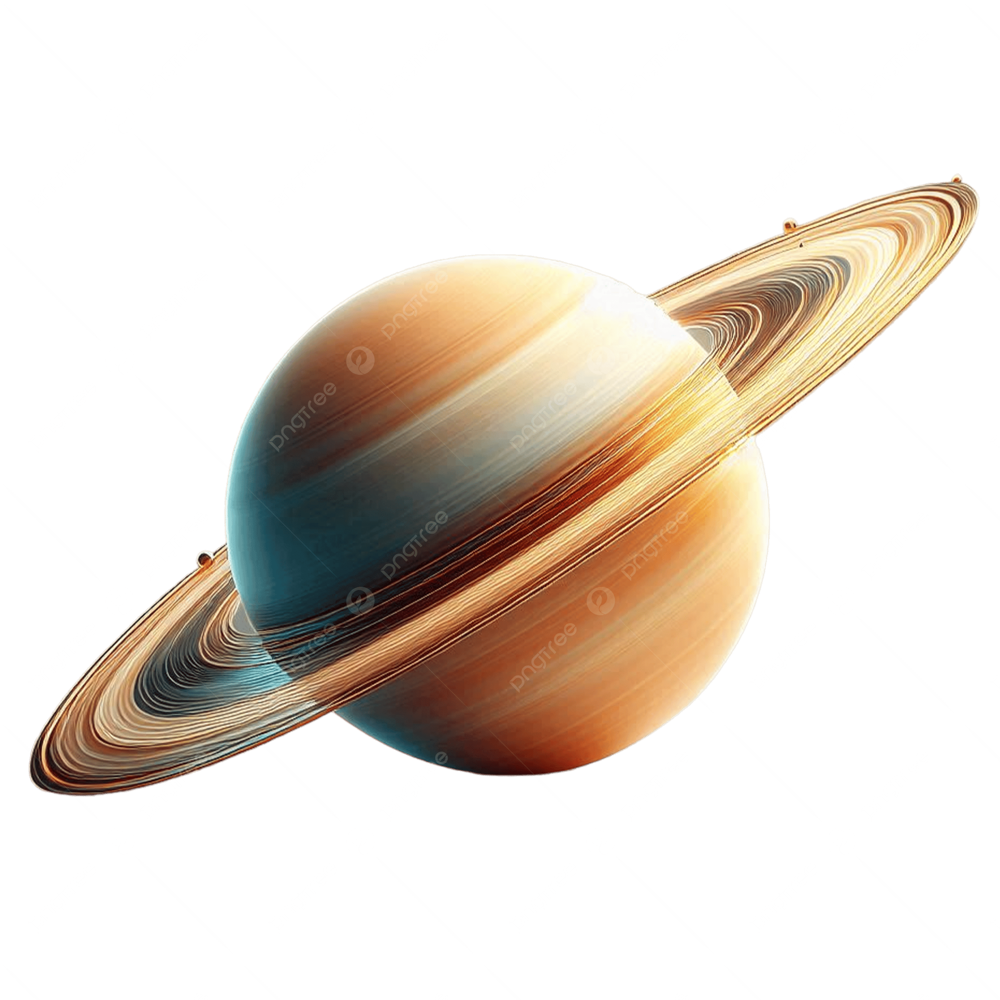
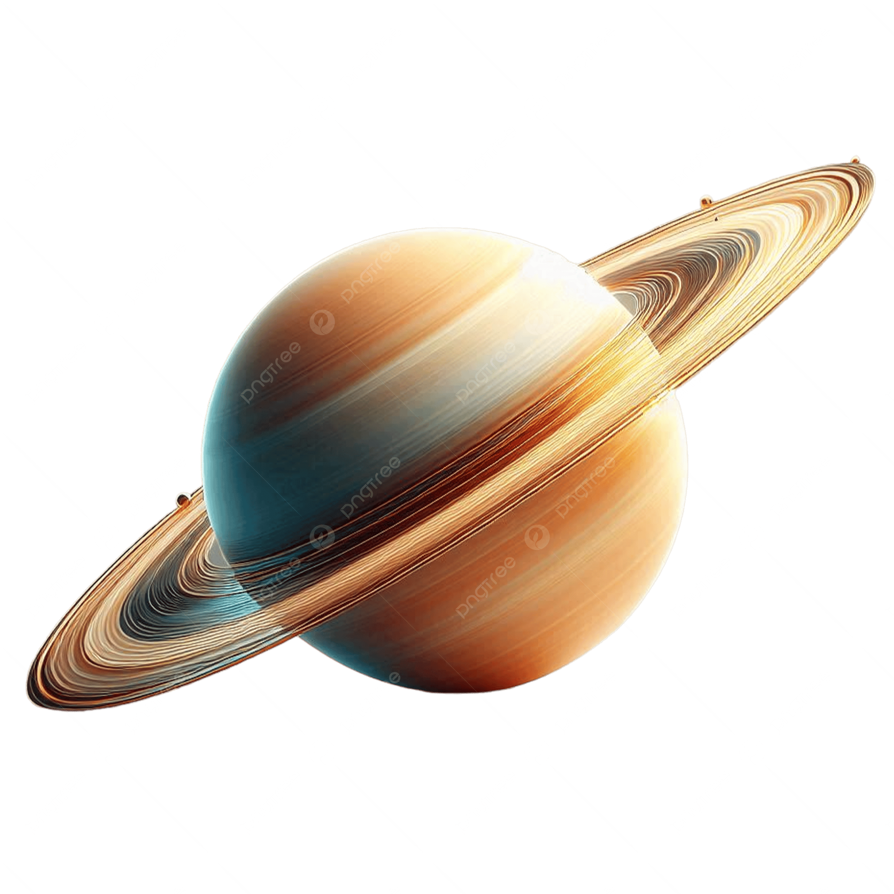
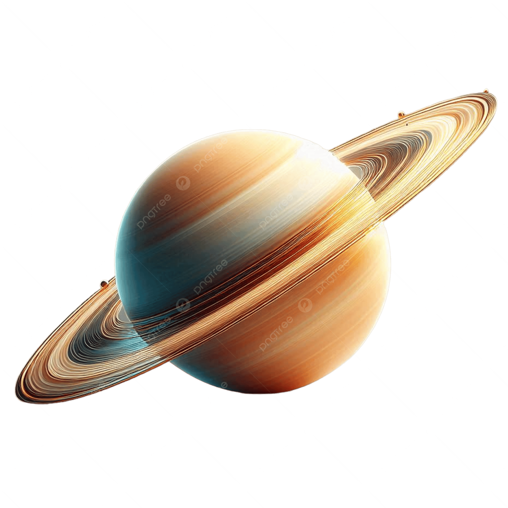

📷 Imagens de Saturno

 

Saturno é o sexto planeta a partir do Sol e o segundo maior do Sistema Solar, ficando atrás apenas de Júpiter. Com um diâmetro de aproximadamente 116 mil quilômetros, ele é cerca de 9 vezes maior que a Terra. Sua composição é majoritariamente gasosa, formada por hidrogênio e hélio, o que o classifica como um gigante gasoso.
O que torna Saturno verdadeiramente fascinante é seu sistema de anéis, o mais extenso e visÃvel entre todos os planetas. Esses anéis são compostos por fragmentos de gelo, rochas e poeira cósmica, distribuÃdos em sete grandes conjuntos, com destaque para os anéis A, B e C.
Saturno possui 82 luas conhecidas, sendo Titã a maior e mais intrigante. Titã tem atmosfera densa e caracterÃsticas que lembram a Terra primitiva, o que a torna alvo de estudos sobre possibilidade de vida.
A rotação de Saturno é extremamente rápida: ele leva apenas 10,7 horas para completar um giro em torno de si mesmo. Já sua translação — o movimento ao redor do Sol — dura cerca de 29,4 anos terrestres.
Sua atmosfera apresenta faixas coloridas visÃveis, causadas por ventos intensos e tempestades. A temperatura média é de cerca de -138 ºC, tornando-o um dos planetas mais frios do Sistema Solar.
Saturno foi observado pela primeira vez por Galileu Galilei em 1610, e desde então tem sido alvo de diversas missões espaciais, como a famosa Cassini, que revelou detalhes impressionantes sobre sua estrutura, luas e anéis.
